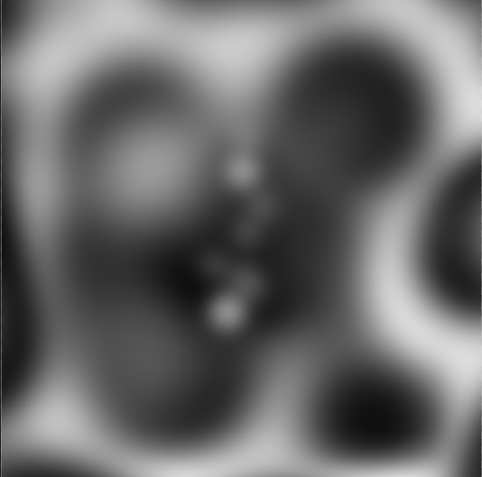
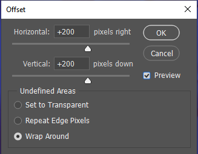
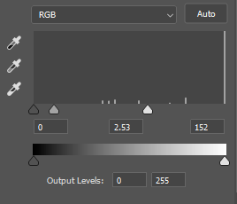

Swirl
The Swirl background, is a modern topography or swirl pattern. This type of pattern is very efficient in filling out empty space and dynamic enough to
-
We'll start by creating a 400 x 400 pixels.
-
The swirl is nothing more than a couple of brush strokes. On our blank canvas, using a black circular brush with very little hardness, begin to create random spotting like the example here:
Here's what mine looked like after a few brush strokes

-
Once you've added spots and smudges to the canvas, we'll add an adjustment and select posterize from the menu. Set the posterization at around 4. You'll start to notice the layers are form.
-
Next select in the Filter menu Other>offset
You'll use the following settings:

-
Using the offset filter, will create seams within the image. All you have to do to blend these is use the Marquee tool (M) to create a selection over the seams, right-clicking the selection and then selecting content aware fill.
-
You should now have a seamless pattern that will span infinitely when repeated in the CSS.
We have our pattern, but we don't have readability because of the lack of contrast between the black text and the lines of the pattern.
-
We'll lighten up the pattern by adding a levels adjustment over the swirl we've created. Move the sliders until the lines become very light but retaining their structure.
These were the settings I found to work well for this pattern

-
Now any black text should be more readable when you add this background to repeat in the CSS. Cheers!
Copyright © 2023 Kevin Duran